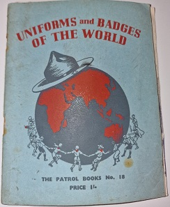

The patrol books were a series of guides about scouting around the world designed to help patrol leaders.

Patrol book no.18
This patrol book is titled 'Unfiforms and badges of the world', this patrol book gave an overview of the different uniforms and fleur-de-lis scout badges of the world.